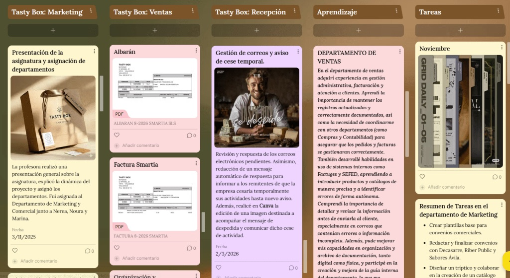
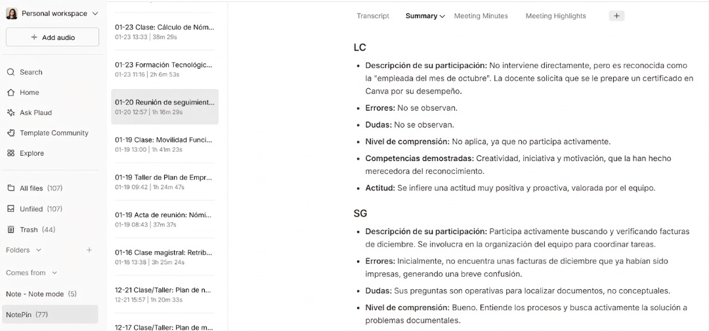
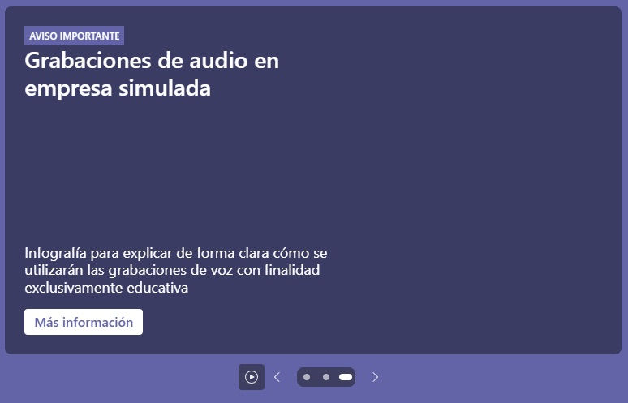

Evaluar en una empresa simulada no es sencillo; ya os he hablado anteriormente de la metodología que utilizo. No se trata únicamente de comprobar si el alumnado sabe hacer una factura, registrar una operación contable, atender a un cliente, preparar una campaña de marketing o redactar un correo profesional. Todo eso es importante, por supuesto, pero en una empresa simulada ocurre algo más complejo: el alumnado trabaja, se organiza, se comunica, se equivoca, resuelve problemas, asume responsabilidades, toma la iniciativa…
Por eso, la evaluación en este contexto no puede basarse solo en los productos finales. La empresa simulada permite observar el desempeño diario del alumnado en un entorno que reproduce el funcionamiento de una empresa real. El aula se convierte en una oficina, el alumnado se organiza en departamentos y las tareas se desarrollan de forma integrada: recepción, compras, ventas, recursos humanos, contabilidad, marketing, atención a clientes, relación con proveedores, gestión documental y comunicación interna.
En este tipo de metodología, muchas de las competencias que queremos evaluar no son tangibles a primera vista. No siempre quedan recogidas en un documento. A veces aparecen en una conversación, en una decisión, en la forma de resolver una incidencia, en la ayuda que se presta a un compañero, en la capacidad de organizarse sin que nadie lo recuerde o en la manera de afrontar un error. Por eso, para mí, evaluar en la empresa simulada significa observar, acompañar, recoger evidencias y ayudar al alumnado a tomar conciencia de cómo está aprendiendo y trabajando.
En Tasty Box, el alumnado no trabaja de forma aislada. Forma parte de un equipo y desempeña funciones dentro de un departamento. A lo largo del curso va rotando por distintas áreas de la empresa, lo que le permite enfrentarse a tareas diversas y desarrollar competencias profesionales, personales y sociales. La evaluación se apoya, por tanto, en el desempeño diario: observo cómo cada alumno se organiza, cómo aplica los procedimientos del departamento, cómo se comunica con sus compañeros, cómo resuelve las tareas asignadas, cómo reacciona ante las dificultades y cómo trabaja en equipo, siempre con el marco EntreComp como referencia.
La evaluación que realizo en la empresa simulada se estructura en distintos momentos:
- Evaluación inicial: ayuda al alumnado a conocer qué competencias va a desarrollar y qué se espera de él. Antes de empezar a trabajar en los departamentos es importante que comprendan que no se les va a evaluar únicamente por “hacer tareas”, sino también por cómo trabajan, cómo se relacionan, cómo gestionan sus responsabilidades y cómo evolucionan.
- Evaluación formativa: es la parte más importante. A lo largo del curso se realizan evaluaciones de desempeño que permiten analizar el progreso del alumnado. No son solo un momento para poner una calificación, sino una oportunidad para conversar sobre su evolución: qué hace bien, en qué necesita mejorar y qué puede hacer para avanzar.
- Evaluación final: permite valorar el recorrido realizado. No me interesa únicamente saber dónde ha llegado el alumno, sino también desde dónde partía y cómo ha evolucionado. En muchos casos, el progreso es tan importante como el resultado.
Para organizar esta evaluación utilizo rúbricas, que me permiten definir con claridad los criterios que se van a tener en cuenta. Las rúbricas ayudan al alumnado a entender qué significa trabajar bien en la empresa simulada y qué evidencias demuestran el desarrollo de determinadas competencias. Utilizo CoRubrics en Google Sheets para facilitar este proceso: permite recoger la evaluación del profesor (o profesores), la autoevaluación y la coevaluación entre compañeros. Para mí esta parte es fundamental, porque el alumnado no solo debe saber cómo le ve el profesor, sino también cómo se percibe a sí mismo y cómo es percibido por quienes trabajan con él.
La autoevaluación ayuda al alumnado a reflexionar sobre su propio desempeño. La coevaluación aporta una mirada complementaria, porque muchas veces los compañeros detectan aspectos del trabajo diario que el profesor no siempre puede observar con el mismo detalle. Y la evaluación del profesorado de apoyo permite integrar todas esas evidencias desde una perspectiva global y pedagógica.
Otro instrumento fundamental es el diario de aprendizaje. Cada alumno va recogiendo evidencias de su proceso: qué tareas ha realizado, qué dificultades ha encontrado, qué ha aprendido, qué competencias cree que ha desarrollado y qué aspectos necesita seguir trabajando. Este diario permite que el alumnado no se limite a “hacer”, sino que también piense sobre lo que hace, y sirve de apoyo en las evaluaciones de desempeño, especialmente cuando existen diferencias entre la percepción del alumno, la de sus compañeros y la del profesor. Aunque no le motiva mucho esta tarea, termina viendo su utilidad cuando tiene evidencias registradas que aportar.

Uno de los mayores retos de la empresa simulada es que pasan muchas cosas al mismo tiempo. Mientras un departamento gestiona pedidos, otro resuelve una incidencia, otro prepara publicaciones para redes sociales y otro contabiliza. El aula funciona como una pequeña empresa, con conversaciones, dudas, errores, avances, bloqueos y decisiones constantes. Como profesora, acompaño, observo, oriento, resuelvo dudas y voy tomando notas, pero no es fácil registrar todo lo que ocurre.
En cursos anteriores llevaba mi diario del profesor a mano: al acabar la clase anotaba con rapidez observaciones sobre el trabajo diario del alumnado. Pero este proceso consumía muchísimo tiempo, a veces tenía que hacerlo de manera precipitada entre clase y clase, y se quedaban cosas importantes sin registrar. Este curso, con 27 alumnos que observar y evaluar, sentí la necesidad de buscar una forma más eficiente de documentar lo que ocurre en el aula.
No quería sustituir mi observación docente, sino mejorarla; no quería automatizar la evaluación, sino disponer de un apoyo que me ayudara a no perder información relevante. Ahí empecé a explorar el uso de Plaud, un dispositivo que llevo en la muñeca y que permite grabar audio y generar transcripciones o resúmenes mediante inteligencia artificial. A partir de los audios, la herramienta genera resúmenes que se pueden personalizar; yo me he creado un tipo de resumen que he denominado “Evaluación del desempeño”.

Por supuesto, posteriormente reviso estos resúmenes; no los utilizo de forma automática. Los leo, los verifico, corrijo lo necesario, elimino lo que no aporta valor y transformo la información en anotaciones útiles para mi diario del profesor, que alojo en un Padlet privado donde anonimizo los datos del alumnado y sin subir transcripciones ni audios. Plaud no evalúa, no decide, no interpreta pedagógicamente lo que ocurre en el aula: solo me ayuda a registrar, ordenar y documentar mejor determinadas situaciones. La evaluación sigue siendo responsabilidad mía.
Evaluar competencias exige evidencias.
Cuando evaluamos competencias, necesitamos evidencias. No basta con decir que un alumno “tiene iniciativa” o que “debe mejorar la comunicación”: necesitamos concretar en qué situaciones lo hemos observado. La empresa simulada genera muchísimas evidencias, pero precisamente por eso algunas pueden perderse. El diario del profesor me permite recogerlas y utilizarlas después, de modo que cuando hablo con un alumno sobre su evolución puedo referirme a situaciones concretas y no solo a impresiones generales. Esto hace que el feedback sea más útil y permite poner en valor progresos que a veces pasan desapercibidos.

La incorporación de Plaud me está resultando útil, pero también me ha obligado a plantearme una cuestión imprescindible: la protección de datos. Una grabación de audio puede contener datos personales, y la voz del alumnado forma parte de su esfera personal aunque la finalidad sea educativa. Entiendo que la grabación puntual de sesiones con finalidad pedagógica queda amparada por la actividad educativa del centro, pero debe ser conocida por el alumnado y recogida expresamente en la información que se le facilita. Para mayor seguridad, anonimizo los datos en el Padlet privado, y conservo los audios solo hasta la finalización del curso y del periodo de revisión de evaluaciones.
La tecnología no sustituye el criterio docente.
Quiero insistir en esta idea antes de acabar: la inteligencia artificial no sustituye al docente. Plaud puede ayudarme a elaborar un diario del profesor más completo, pero no sustituye mi mirada profesional. La herramienta puede generar un resumen, pero soy yo quien decide qué información es relevante, qué debe descartarse, qué contrastarse y cómo se interpreta pedagógicamente cada situación. La evaluación sigue requiriendo conocer al alumnado, entender el contexto, observar su evolución, contrastar evidencias y tomar decisiones con criterio docente.
Evaluar es acompañar: ayudar al alumnado a conocerse mejor, a identificar sus fortalezas, a detectar sus áreas de mejora y a prepararse para el mundo laboral.